Films at Vesper Film Festival
Explore the diverse selection of films showcased at the Vesper Film Festival. From thought-provoking shorts to captivating feature films, our programme highlights the best of independent cinema.
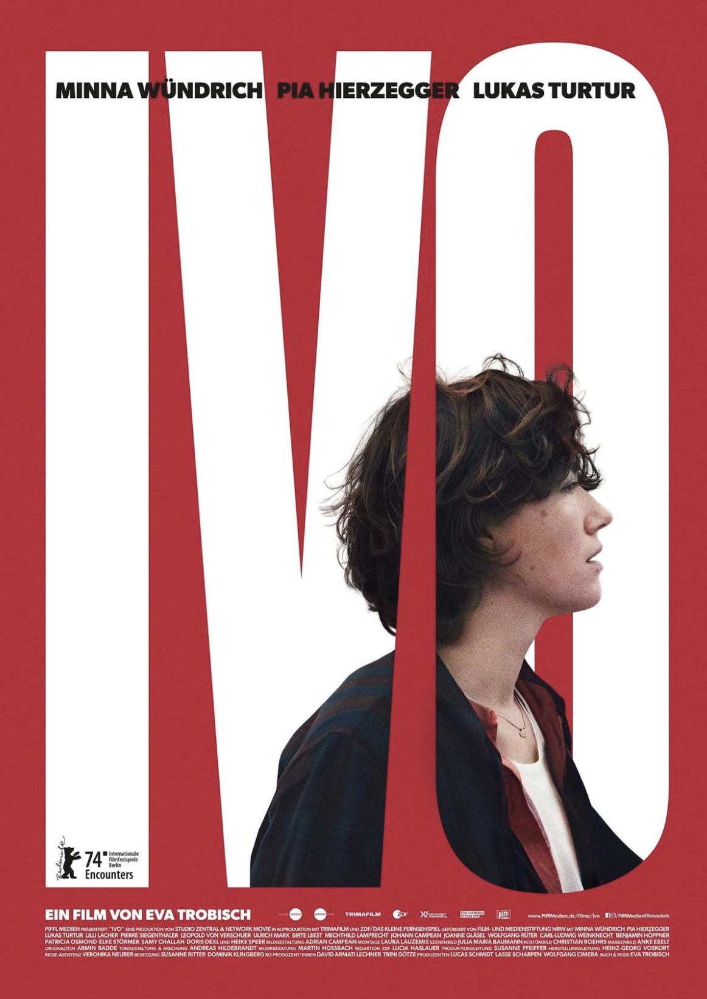
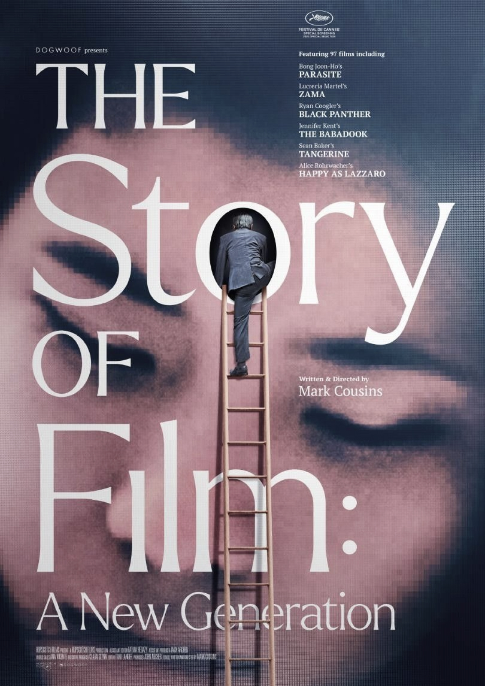
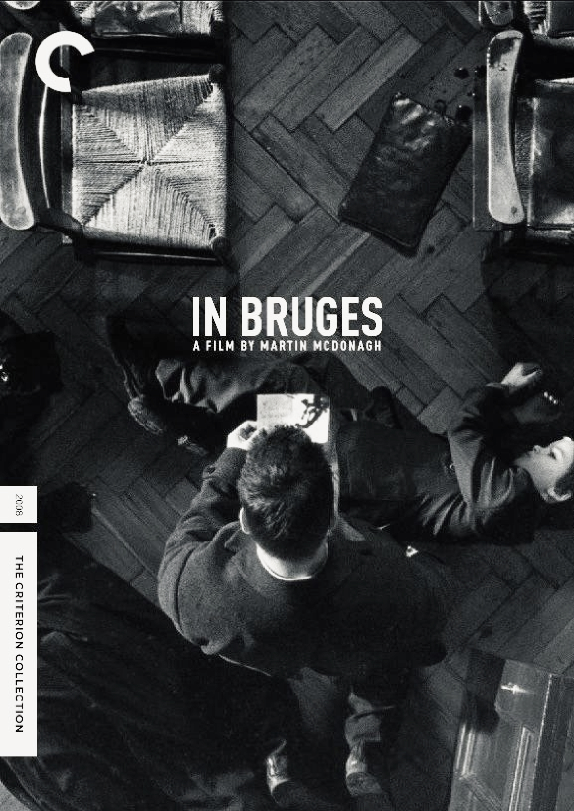
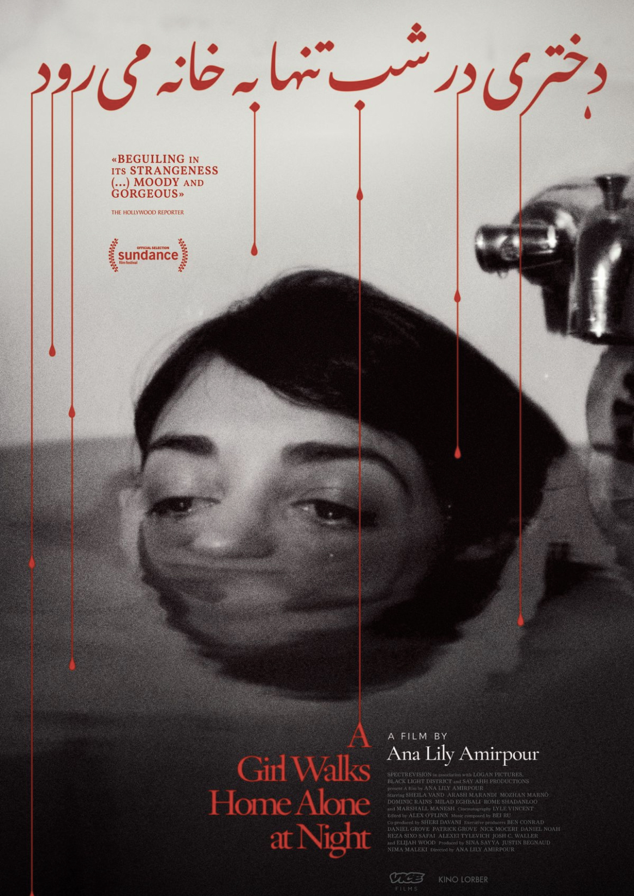
Each film is carefully curated to provide a unique cinematic experience, encouraging audiences to engage with the stories and perspectives presented on screen.
- Short Films: A collection of innovative and experimental short films from emerging filmmakers.
- Feature Films: Full-length narratives that explore a variety of themes and genres.
- Documentaries: Insightful documentaries that shed light on real-world issues and stories.
Current Film List for Vesper Film Festival 2026
- Who am I to You, 2025: A captivating short film exploring themes of identity and belonging.
- The Longest Day, 2026: A thought-provoking feature film that delves into the complexities of human relationships.
- Green Horizons, 2026: A compelling documentary that sheds light on environmental issues and their impact on local communities.
- Silent Echoes, 2026: An experimental short film that challenges traditional narrative structures and visual storytelling.
- Whispers in the Wind, 2025: A poetic short film that explores the beauty and fragility of nature.
- Shadows of the Past, 2026: A compelling feature film that examines the lasting impact of historical events on contemporary society.
- Fragments of Memory, 2026: A visually stunning short film that explores the complexities of memory and perception.
- Beyond the Horizon, 2025: A thought-provoking documentary that explores the challenges and triumphs of human exploration and discovery.
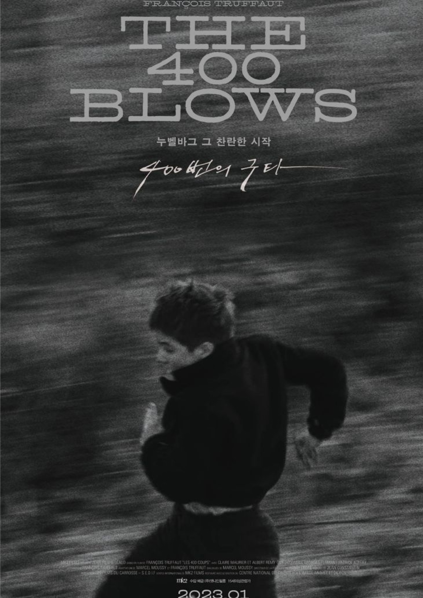
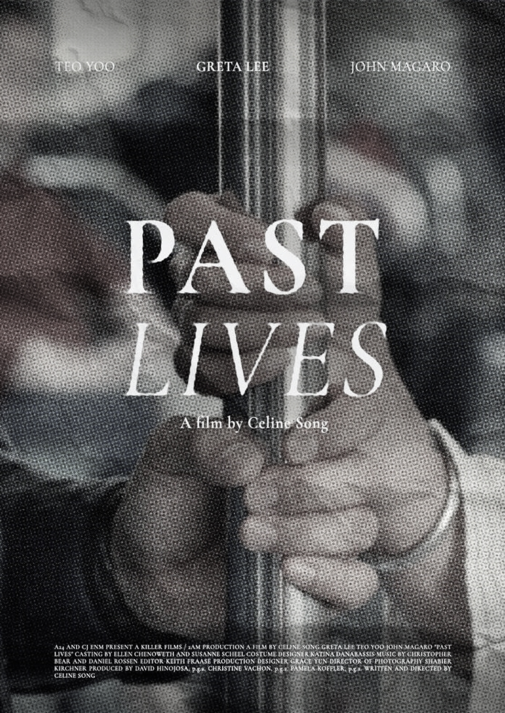
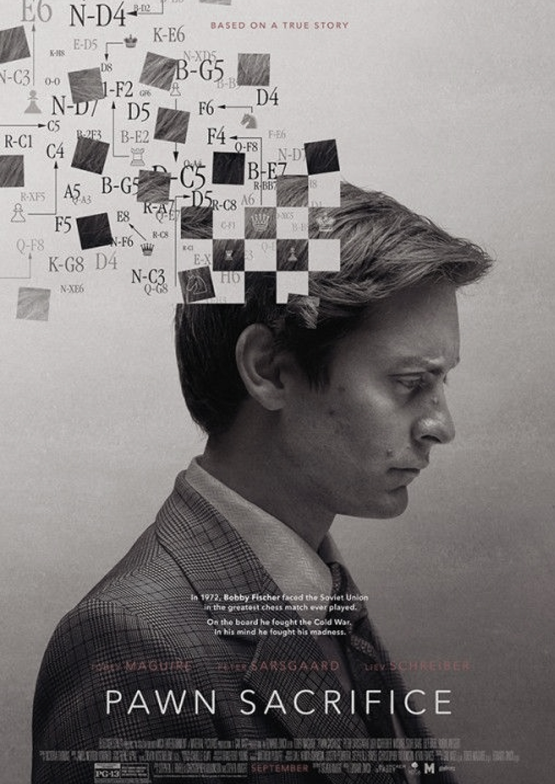
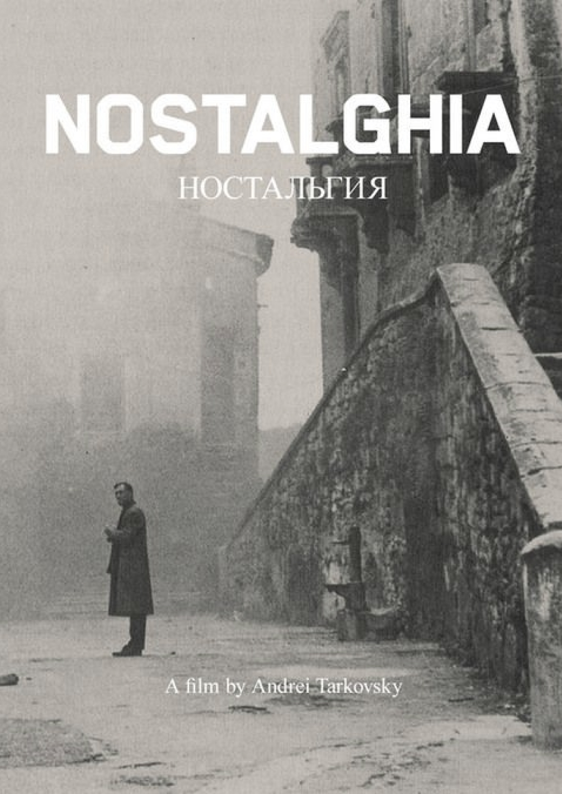
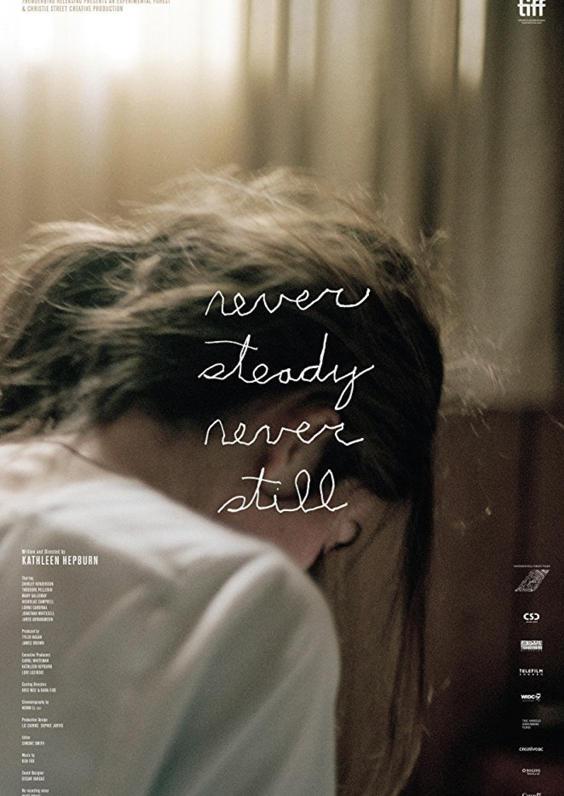
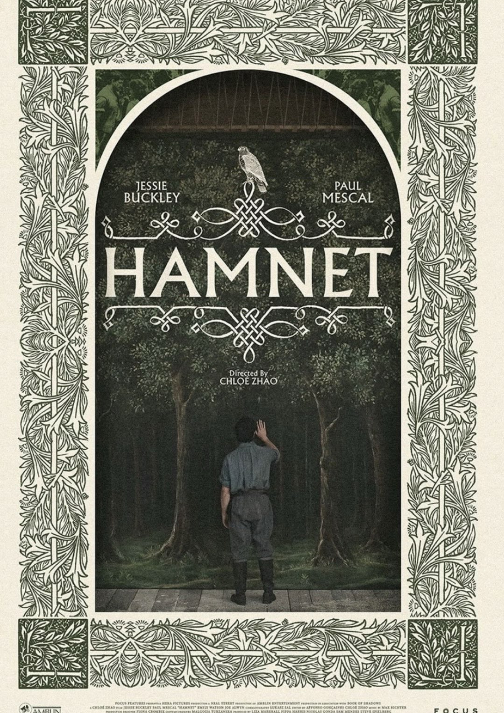
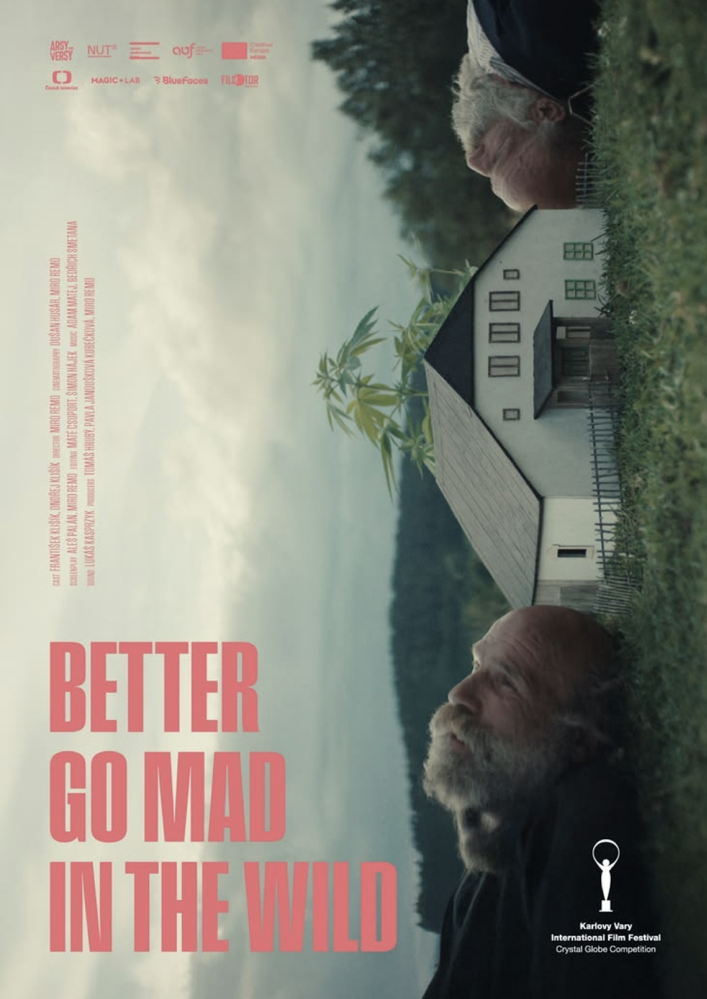
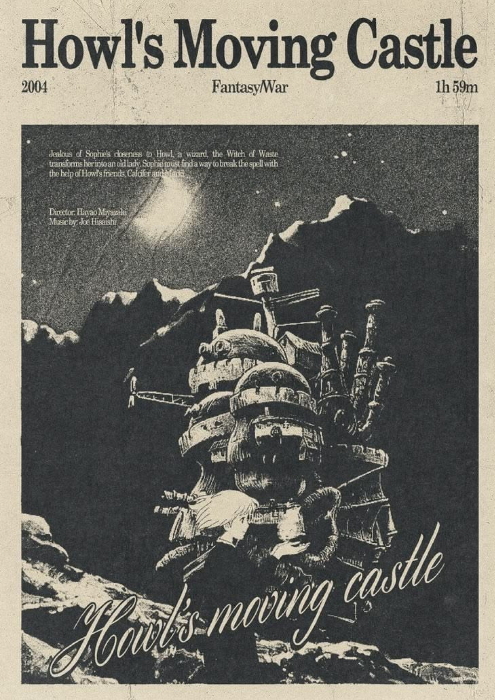
(All films named in the list are fictional and do not exist. All pictures were taken from Pinterest for illustrative purposes only. If you see your work among the posters and would like it to be removed, please let me know. My email: valery.k0r04@mail.com.)
Film Submission Guidelines
If you are a filmmaker interested in submitting your work to the Vesper Film Festival, please review our submission guidelines below:
- Films should not exceed 30 minutes in length for short films and 120 minutes for feature films.
- All submissions must be original works and not previously screened at other festivals.
- The submission deadline is September 30, 2026. Late submissions will not be accepted.
If you are a filmmaker and would like to submit your film for consideration at the Vesper Film Festival, please fill out the submission form below. We welcome submissions from all genres and styles of filmmaking.
We look forward to receiving your submissions and showcasing your work at the Vesper Film Festival!